Brisbane Boys' College
2021 – 2026 · Green. White. Black. · World Champions
Top Results
In our first-ever international appearance, Team Hyperion topped the Lightweight SuperTeam division — competing on the world stage and coming away as champions.
Undefeated throughout the entire 2025 Australian National Competition — claiming 1st place and securing Australia's qualification spot for the 2026 World Championship.
Against teams from across the globe, we placed 14th in the individual Lightweight Soccer division — a remarkable debut performance representing Australia on the world stage.
Having secured Australia's qualification spot at Nationals, Team Hyperion is set to compete at the 2026 RoboCup Junior International Competition in Incheon — our second world appearance.
Complete Record
| RoboCup Junior International 2026 | Upcoming | 🇰🇷Incheon, South Korea | Lightweight Soccer · Qualified as national representatives |
| RoboCup Junior International 2025 — Individual | 14th Place | 🇧🇷Salvador, Brazil | Lightweight Soccer · Team Hyperion's international debut |
| RoboCup Junior International 2025 — SuperTeam | 1st Place | 🇧🇷Salvador, Brazil | Lightweight Soccer SuperTeam · World Champions |
| Australian National Championship 2025 | 1st Place | 🇦🇺Australia | Lightweight Soccer · Undefeated — national qualification secured |
| Queensland State Championship 2025 | 2nd Place | 🇦🇺Queensland, Australia | Lightweight Soccer · Present Team Hyperion |
| Australian National Championship 2024 | 2nd Place | 🇦🇺Australia | Lightweight Soccer · Matthew Adams, Luke Atherton, Sam Garg |
| Queensland State Championship 2024 — Lightweight | 3rd Place | 🇦🇺Queensland, Australia | Lightweight Soccer · Matthew Adams, Luke Atherton, Sam Garg |
| Queensland State Championship 2024 — Standard | 3rd Place | 🇦🇺Queensland, Australia | Standard Soccer · Thomas McCabe |
| Australian National Championship 2023 | 6th Place | 🇦🇺Australia | Standard Soccer · Luke Atherton, Sam Garg |
| Queensland State Championship 2023 | 2nd Place | 🇦🇺Queensland, Australia | Standard Soccer · Luke Atherton, Sam Garg |
| Australian National Championship 2022 | 5th Place | 🇦🇺Australia | Open Line Rescue · Luke Atherton |
| Queensland State Championship 2022 | 2nd Place | 🇦🇺Queensland, Australia | Open Line Rescue · Luke Atherton |
| Australian National Championship 2021 | 4th Place | 🇦🇺Australia | OnStage · Matthew Adams, Sam Garg |
| Queensland State Championship 2021 | 4th Place | 🇦🇺Queensland, Australia | OnStage · Matthew Adams, Sam Garg · First RoboCup competition |
What's Next